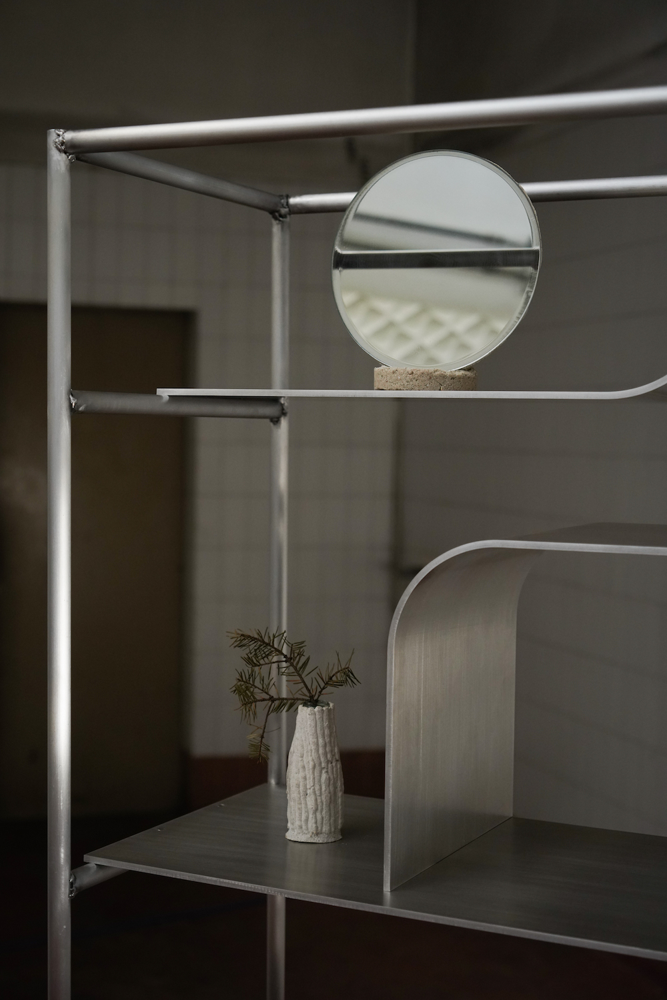

Neostone
various sizes
Minealloop
2022
2022 crQlr awards - Investigative Materials Prize
2022 Exhibited in Object Rotterdam
Introduction
Fixing minerals with minerals
A collection of a series of homeware made with discarded materials and
objects from The Hague, Netherland. Many products in second-hand shops are not sold and are then sent to the incinerator,
so Erco Lai decided to give a new life to glass and ceramic products by developing new coatings made with waste
minerals from The Hague.
But what should be designed for a world of plenty? Natural resources are getting exhausted,
so Erco Lai believes in alternative ways of designing, using what is already there. The response to our current
context is a local and circular production.
Objects
Colleciton 2022


Colleciton 2024
Process
Neo craft
Based on the research of Neo Stone Age , Erco Lai developed a new technique repairing broken glassware or ceramic with “Neostone”. From this new “kintsugi” craft, it gives those unwanted homewares a mineral coating. Erco Lai covered broken/imperfect glassware with "Neostone" developed using discarded lime pellet, powder of limestone from quarries or sand from construction sites, also known as geo-polymer, this material doesn’t require firing and adds a new touch and feeling to the object.


2022 Object Rotterdam
Mineralloop Winkel, Netherlands

2023 ALCOVA
Duplicating Landscape, Milan
Further reading
Neo Stone Age
- Design research of Neostone